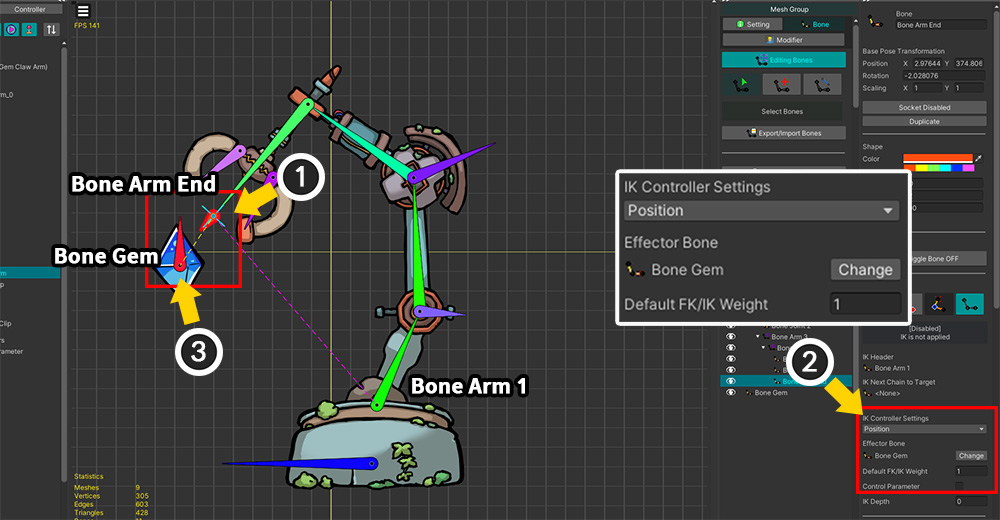
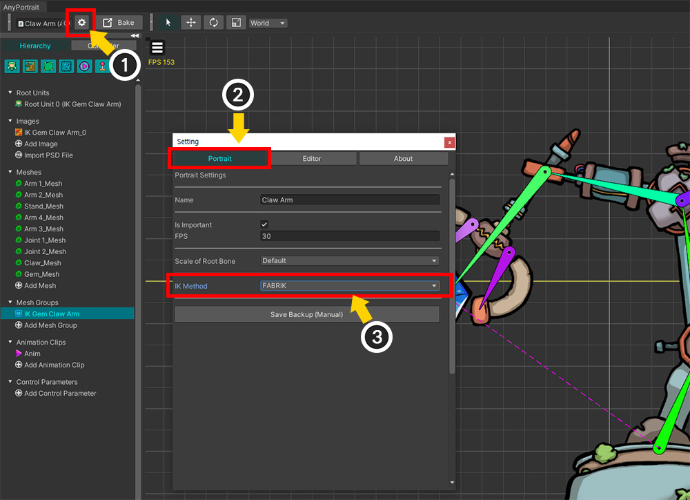
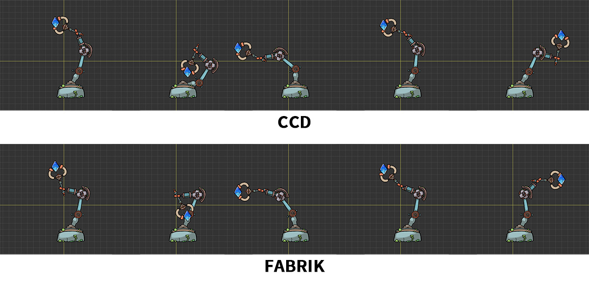
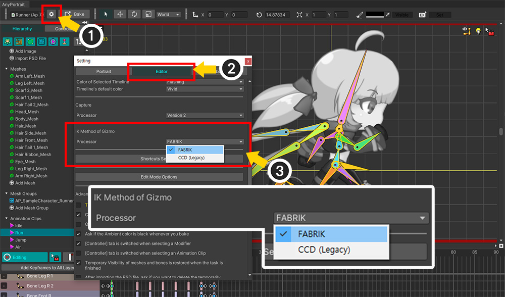

AnyPortrait > マニュアル > 改善されたIK：FABRIK
改善されたIK：FABRIK
1.5.0
「AnyPortrait v1.5.0」では、IK演算の基本アルゴリズムが「CCD(Cyclic Coordinate Descent)」から「FABRIK(Foward And Backward Reaching Inverse Kinematics)」に変更されました。
「FABRIK」方式は、「CCD」方式で発生する特定の状況での問題を解決し、実行パフォーマンスが優れています。
ただし、既存の「CCD」を利用して制作されたアニメーションを維持するために、ユーザーが「CCD」や「FABRIK」を選択できるオプションを提供します。
- 既存に作業したキャラクターは、オプションを変更しないと「CCD」方式でIKが動作します。
- 新しく作成したキャラクターは、「FABRIK」がデフォルト値として使用されます。
このマニュアルでは、追加された「FABRIK」の設定方法と変更されたアルゴリズムの違いを説明します。
IKの詳細については、次のマニュアルを確認してください。
- IK設定
- IKコントローラ
- 意図したとおり、IKが動作するように誘導
FABRIK設定

「IKコントローラ」を使用した簡単な例を上記のように準備しました。
「宝石」をボーンに接続し、そのボーンはキーフレームアニメーションによって移動します。
「マシンアーム」はいくつかのボーンで構成されており、アニメーションなしで「IKコントローラー」によって「宝石」をキャッチするために自動的に移動します。

「マシンアーム」が「ボーン」によって動くように作られています。
「マシンアーム」が動くように「IKコントローラ」を設定する前に、メインボーンを「IKチェーン」に接続します。
(1) メッシュグループの「Bone」タブを選択します。
(2) 「IKチェーン」の始まりとなるボーン（「Bone Arm 1」）を選択します。
(3) そのボーンを「IK Head」タイプに変更します。
(4) 「Change IK Target」ボタンを押します。
(5) 「IKチェーン」の最後、つまり宝石をつかむ部分に対応するボーン（「Bone Arm End」）を選択します。
(6) マシンアームのボーンが「IKチェーン」として接続されていることがわかります。

続いて「IKコントローラ」を設定します。
(1) 宝石をつかむBone（「Bone Arm End」）を選びます。
(2) 「IKコントローラ」のタイプを「Position」に変更し、「Effector Bone」を宝石に相当するボーン（「Bone Gem」）に設定した後、「Default FK / IK Weight を「1」に設定します。
(3) 「Bone Arm 1」から「Bone Arm End」につながる「IKチェーン」は、宝石ボーン（「Bone Gem」）に向かって自動的に移動します。

「IK方式」を変更してみましょう。
（v1.5.0アップデート後にキャラクターを新しく作成する場合は、FABRIKがデフォルトとして設定されています。）
（1）「Bake」ボタンを押します。
（2）「Setting」タブを選択します。
（3）「IK Method」オプションで「FABRIK」または「CCD」を選択できます。

「IKコントローラ」のアルゴリズムを「設定ダイアログ」でも変更できます。
(1) 「設定ダイアログ」を開きます。
(2)「Portrait」タブを選択します。
(3) 「IK Method」オプションでアルゴリズムを変更できます。

宝石ボーン（「Bone Gem」）だけを動かしてアニメーションを作ると、「マシンアーム」が「IKコントローラー」によって上のように動きます。

同じアニメーションを「CCD」と「FABRIK」方式でそれぞれ再生してみると、上記のように少し違う動きが見えます。
「宝石」の位置が同じであっても、「マシンアーム」が異なる形で動くことがわかります。
IKは明確な正解を持っていないので、アルゴリズムによって異なる結果を示します。
「FABRIK」と「CCD」はそれぞれの特性を持っているので、状況に応じて適切なアルゴリズムを使用することをお勧めします。
ただし、「AnyPortrait」では、「FABRIK」方式がより改善されたチューニングを含んでいるため、従来の「CCD」方式に比べて改善された動きを示します。
アルゴリズムの特性とチューニングの違いによって、2つの方法は次の違いを持ちます。
- 「CCD」では「IKチェーン」の始まりが大きく動くのに対し、「FABRIK」では「IKチェーン」の先端が大きく動いています。
- 「Effector Bone」が「IKチェーン」に近いときに発生する問題が「FABRIK」で大幅に改善されました。
- 「CCD」では「前フレームでのポーズ」を参照してIKを演算するようにチューニングが行われましたが、「FABRIK」ではこれと異なって同じ状況では同じ結果を作ります。
- 「CCD」では「前フレームのポーズ」と「Prefer Angle」を用いてIK演算の開始ポーズを計算し、「FABRIK」ではIK演算の開始ポーズを「FK」、「Prefer Angle」の中からユーザが決定する。することができます。 （関連ページ）
- 「FABRIK」で実行性能がやや良くなりました。
以下の動画でもIK方式による違いをご覧いただけます。
エディタギズモのIKアルゴリズム

キャラクターアニメーションの「IKコントローラ」のIKアルゴリズムとは別に、AnyPortraitエディタで使用されるIKアルゴリズムを変更できます。
(1) 「設定ダイアログ」を開きます。
(2) 「Editor」タブを選択します。
(3) 「IK Method of Gizmo」の「Processor」オプションを変更できます。上記と同様に、「FABRIK」と「CCD（Legacy）」のアルゴリズムから選択できます。

(4) アニメーション編集画面で「IKチェーン」が設定されたボーンをギズモを使って動かすと、このオプションに応じて異なるIKアルゴリズムが使用されて演算されます。